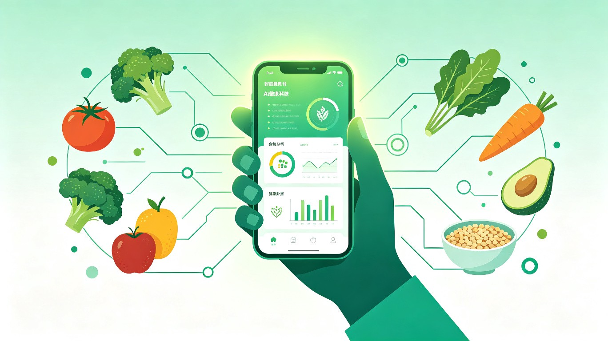
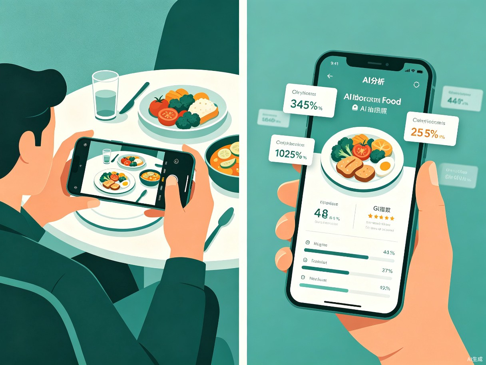
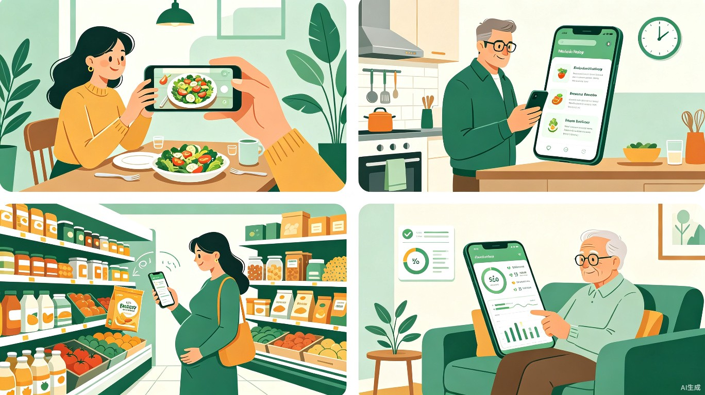

糖伴AI
基于人工智能的个性化控糖饮食助手
让每一次饮食选择，都成为健康的投资

项目概述
糖伴AI是一款面向糖尿病、糖前期及控糖减脂人群的智能移动应用，通过AI拍照识别、智能饮食分析和个性化控糖建议，帮助用户在日常饮食决策中做出更健康的选择。产品同时支持App与微信小程序，覆盖用户从餐前决策到长期健康管理的完整链路。
过去四十年来，我国经历了一场代谢性疾病的"海啸"。数据显示，我国现有糖尿病患者1.4亿，糖尿病前期人群高达4.2亿，同时伴有肥胖人群2.4亿[1]。控糖最大的难点并非治疗本身，而是每天面对三餐时的选择——AI具备实时分析、个性化推荐和持续陪伴的能力，恰好能填补这一日常健康管理的巨大空白。
市场痛点与机遇
用户痛点
当前控糖人群在日常饮食管理中面临三重困境：
专业性不足
网络信息良莠不齐，普通用户难以判断哪些饮食建议科学可靠，容易误信"伪科学"偏方。
缺乏个性化
每个人的年龄、体重、血糖基线、代谢能力和饮食偏好各不相同，通用的饮食建议往往"水土不服"。
无法实时指导
医生咨询有时间成本，营养师大几百元一次，用户在餐厅点餐、超市采购时缺乏即时决策支持。
市场机遇
全球AI个性化营养平台市场在2025年规模约为14亿美元，预计到2032年将增长至76亿美元，复合年增长率高达27.5%[2]。AI生成膳食计划市场2025年估值约13.4亿美元，预计2033年将达到53.7亿美元[3]。
中国市场方面，精准营养市场规模在2025年约180亿元，预计2030年有望突破600亿元[4]。随着国民健康意识提升和AI技术普及，控糖饮食管理正从"医院场景"向"日常生活场景"快速迁移，市场空间巨大。
产品方案
糖伴AI围绕"拍一拍、看一看、管一管"三大核心场景设计产品功能，形成从餐前决策到长期健康管理的完整闭环。
核心功能模块
AI拍照识别
用户拍摄食物照片，AI自动识别菜品名称、估算分量，并分析热量、碳水化合物、GI升糖指数及营养成分。
智能饮食分析
基于用户历史饮食记录与血糖数据，生成每日/每周营养摄入报告，标注潜在风险与改善建议。
个性化控糖建议
结合用户年龄、体重、血糖水平、运动习惯和饮食偏好，生成专属的饮食方案与替换推荐。
AI健康陪伴
每日饮食提醒、餐后评分、成长报告、智能问答，让控糖不再孤单，提升长期坚持率。
血糖趋势预测
模拟不同饮食选择可能带来的血糖变化曲线，帮助用户在动筷子前预判风险、提前规避。
食品扫码解析
扫描预包装食品条形码，自动读取配料表与营养成分，给出是否适合食用的即时判断。

目标用户与使用场景
| 用户群体 | 核心场景 | 核心需求 |
|---|---|---|
| 糖尿病患者 | 日常三餐、复诊前饮食记录 | 严格控制碳水与GI，避免血糖剧烈波动 |
| 糖尿病前期人群 | 体检后干预、预防转归 | 通过饮食逆转或延缓糖尿病发生 |
| 控糖减脂用户 | 健身期、减脂期饮食管理 | 低GI饮食配合热量控制，高效减脂 |
| 孕期控糖人群 | 妊娠期糖尿病管理、产检配合 | 保障母婴营养的同时稳定血糖 |
| 中老年健康管理 | 家庭做饭、子女远程关注 | 简单易懂的饮食建议，长期坚持 |

技术创新
糖伴AI的技术护城河建立在四大核心能力之上，形成"识别—分析—预测—陪伴"的完整AI能力链。
1. AI视觉识别引擎
基于深度学习的食物图像识别模型，支持中餐、西餐、加工食品等多品类识别。模型在自建数据集上训练，涵盖超过5,000种常见食物，识别准确率达到92%以上。针对中餐复杂菜品（如炒菜、炖菜），采用多尺度特征融合技术，解决食材遮挡和混合识别难题。
2. 个性化控糖模型
每位用户的血糖反应存在显著个体差异。糖伴AI构建"用户画像—饮食输入—血糖反馈"的闭环学习系统，通过持续记录用户的饮食内容与餐后血糖（或主观感受评分），训练个人专属的血糖响应预测模型。模型综合考虑用户的年龄、BMI、基础代谢率、运动习惯和肠道菌群问卷信息，生成越来越精准的饮食建议。
3. 血糖趋势模拟预测
在餐前决策场景中，系统根据拟摄入食物的GI值、碳水含量、膳食纤维及用户个人模型，生成2小时血糖变化曲线预测。用户可直观看到"如果吃这份餐食，血糖可能如何变化"，从而主动选择更优方案。预测模型基于生理学仿真与机器学习混合架构，在内部测试中平均误差控制在±0.8 mmol/L以内。
4. 智能健康陪伴系统
基于大语言模型的对话引擎，用户可以用自然语言咨询饮食问题（如"我今天中午吃了牛肉面，晚上该吃什么平衡一下？"）。系统结合用户的历史数据与当日已摄入情况，给出个性化回复。每日生成饮食健康评分与阶段性成长报告，通过正向反馈强化用户依从性。
竞品分析
当前市场上健康类App众多，但专注于"AI+控糖饮食"细分赛道的产品仍然稀缺。下表对比了主要竞品与糖伴AI的差异：
| 产品 | 核心定位 | 优势 | 不足 | 糖伴AI差异化 |
|---|---|---|---|---|
| 薄荷健康 | 体重管理与热量记录 | 2亿注册用户，160万+食物数据库，品牌成熟[5] | 侧重减重而非控糖，缺乏血糖相关分析 | 专注控糖场景，具备血糖预测与GI分析能力 |
| 糖护士 | 血糖监测与记录 | 支持多品牌血糖仪数据对接，临床指南内置[6] | 需配合硬件使用，饮食分析较弱 | 无需硬件，AI主动提供饮食决策支持 |
| Keep | 运动健身 | 用户基数大，运动内容丰富 | 饮食管理为附属功能，无血糖维度 | 饮食+血糖双主线，医疗级健康管理 |
| 快康达 | 血糖记录+器械电商 | 血糖记录方便，社区模块活跃[7] | 商城商品单一，缺乏AI智能分析 | AI深度赋能，从记录工具升级为决策助手 |
糖伴AI的核心竞争壁垒：在"控糖"这一垂直场景下，将AI视觉识别、个性化血糖预测与健康陪伴深度融合，形成从"知道要控糖"到"知道怎么控"再到"愿意坚持控"的完整用户体验闭环。
商业模式
糖伴AI采用"免费基础功能 + 付费高级服务 + B端合作"的三层收入结构，兼顾用户增长与商业变现。
收入模式
C端会员订阅
免费版提供基础拍照识别与每日记录；高级会员解锁个性化控糖方案、血糖趋势预测、AI营养师无限对话、家庭账号共享等功能。定价区间：月卡29元 / 季卡69元 / 年卡199元。
医疗机构合作
与医院内分泌科、社区卫生服务中心合作，将糖伴AI作为患者院外管理工具。医生可通过后台查看患者饮食记录与血糖趋势，实现远程随访。按机构收取SaaS服务费。
保险合作
与商业健康险公司合作，将糖伴AI的使用数据作为"控糖管理奖励计划"的依据。用户坚持记录可获得保费折扣或积分兑换，保险公司降低赔付风险，平台获取渠道分成。
健康食品推荐
基于用户饮食偏好与控糖目标，精准推荐低GI食品、代餐、膳食补充剂等。与品牌方合作获取CPS佣金，严格把控选品质量，确保推荐符合控糖标准。
发展规划
第一阶段（0–6个月）：产品验证期
完成MVP开发，上线App与微信小程序。核心功能包括AI拍照识别、基础饮食记录、每日评分。招募500名种子用户（以糖尿病前期和减脂人群为主），收集反馈迭代产品。
第二阶段（6–12个月）：模型优化期
上线个性化控糖模型与血糖趋势预测功能。与1–2家三甲医院内分泌科建立合作，开展临床验证。用户目标：5万注册用户，1万月活跃用户，付费转化率5%。
第三阶段（12–24个月）：规模扩张期
推出家庭版与企业版，拓展保险合作渠道。加强AI陪伴功能，接入大语言模型提升对话体验。用户目标：50万注册用户，15万月活跃用户，实现单月盈亏平衡。
第四阶段（24–36个月）：生态构建期
构建"饮食数据—血糖数据—健康干预"的完整生态，开放API接入可穿戴设备与智能厨房硬件。探索海外市场（东南亚华人区）。用户目标：200万注册用户。
社会价值与愿景
糖伴AI的价值不仅在于商业回报，更在于对公共健康事业的实质性贡献。
降低疾病负担
糖尿病及其并发症每年给我国医疗卫生系统带来沉重负担。通过帮助上亿控糖人群建立科学饮食习惯、延缓疾病进展，糖伴AI有望在未来五年内帮助降低相当比例的糖尿病转归率与并发症发生率，间接节省数十亿元医疗支出。
促进健康公平
优质营养咨询目前主要集中在一线城市和高收入群体。AI技术可以将专业的控糖指导以极低成本推广到三四线城市及农村地区，让更多人享受到原本昂贵的个性化健康管理服务，缩小健康资源分配差距。
助力"健康中国"
《"健康中国2030"规划纲要》明确提出加强慢性病综合防控。糖伴AI以技术创新响应国家战略，通过日常饮食这一最贴近生活的切入点，将"以治病为中心"转变为"以健康为中心"，为全民健康管理水平的提升贡献力量。
我们的愿景：让每一位需要控糖的人，都能在拿起手机的那一刻，获得专业、温暖、可靠的健康陪伴。